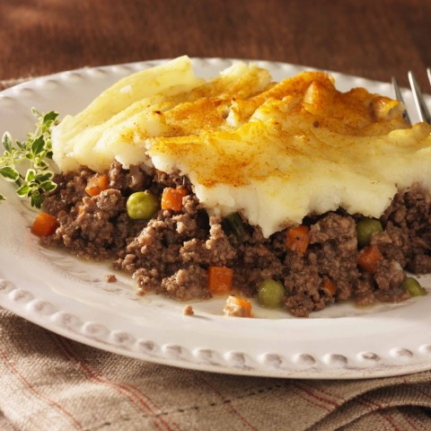

Shepherd's Pie

Classic comfort dish from the British Isles. Shepherd's Pie is traditionally made with lamb. Cottage Pie is made with beef.
Ingredients
For the Potatoes:
- 1 1/2 pounds russet potatoes
- 1/4 cup half-and-half
- 2 ounces unsalted butter
- 3/4 teaspoon kosher salt
- 1/4 teaspoon freshly ground black pepper
- 1 egg yolk
For the Filling:
- 2 tablespoons canola oil
- 1 cup chopped onion
- 2 carrots, peeled and diced small
- 2 cloves garlic, minced
- 1 1/2 pounds ground lamb
- 1 teaspoon kosher salt
- 1/2 teaspoon freshly ground black pepper
- 2 tablespoons all-purpose flour
- 2 teaspoons tomato paste
- 1 cup chicken broth
- 1 teaspoon Worcestershire sauce
- 2 teaspoons freshly chopped rosemary leaves
- 1 teaspoon freshly chopped thyme leaves
- 1/2 cup fresh or frozen corn kernels
- 1/2 cup fresh or frozen English peas
Instructions
- Peel the potatoes and cut into 1/2-inch dice.
Place in a medium saucepan and cover with cold water.
Set over high heat, cover and bring to a boil.
Once boiling, uncover, decrease the heat to maintain a simmer and cook until tender and easily crushed with tongs, approximately 10 to 15 minutes.
Place the half-and-half and butter into a microwave-safe container and heat in the microwave until warmed through, about 35 seconds.
Drain the potatoes in a colander and then return to the saucepan.
Mash the potatoes and then add the half and half, butter, salt and pepper and continue to mash until smooth.
Stir in the yolk until well combined.
- Preheat the oven to 400 degrees F.
- While the potatoes are cooking, prepare the filling.
Place the canola oil into a 12-inch saute pan and set over medium high heat.
Once the oil shimmers, add the onion and carrots and saute just until they begin to take on color, approximately 3 to 4 minutes.
Add the garlic and stir to combine.
Add the lamb, salt and pepper and cook until browned and cooked through, approximately 3 minutes.
Sprinkle the meat with the flour and toss to coat, continuing to cook for another minute.
Add the tomato paste, chicken broth, Worcestershire, rosemary, thyme, and stir to combine.
Bring to a boil, reduce the heat to low, cover and simmer slowly 10 to 12 minutes or until the sauce is thickened slightly.
- Add the corn and peas to the lamb mixture and spread evenly into an 11 by 7-inch glass baking dish.
Top with the mashed potatoes, starting around the edges to create a seal to prevent the mixture from bubbling up and smooth with a rubber spatula.
Place on a parchment lined half sheet pan on the middle rack of the oven and bake for 25 minutes or just until the potatoes begin to brown.
Remove to a cooling rack for at least 15 minutes before serving.